地政学
オスロは北海、北極圏、EU外のEEA国家、NATO、海洋資源外交を結ぶ首都です。王宮、議会、省庁、研究機関が近く、石油基金、環境政策、北極圏安全保障まで、港町の視野で国家方針を考えます。周辺国との信頼も都市の土台です。
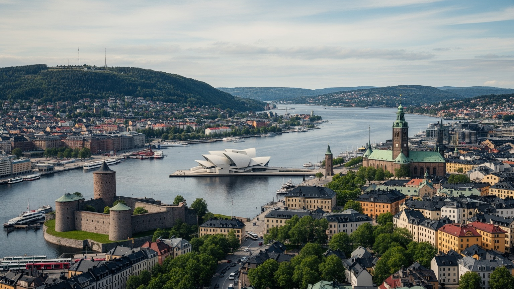
🇳🇴 ノルウェー / 首都オスロ / World City Atlas
オスロフィヨルドの奥に広がる、ノルウェー最大の都市です。王宮、議会、港、海運、エネルギー金融、大学、移民の地区、森へ続く日常が、北欧の福祉国家を動かしています。
フィヨルドの首都
オスロは、国際海運とエネルギー資本を扱う港湾都市であり、王政と議会、大学、文化機関、移民の生活圏が近接する首都です。フィヨルドとマルカの森が、都市の成長を強く縁取ります。
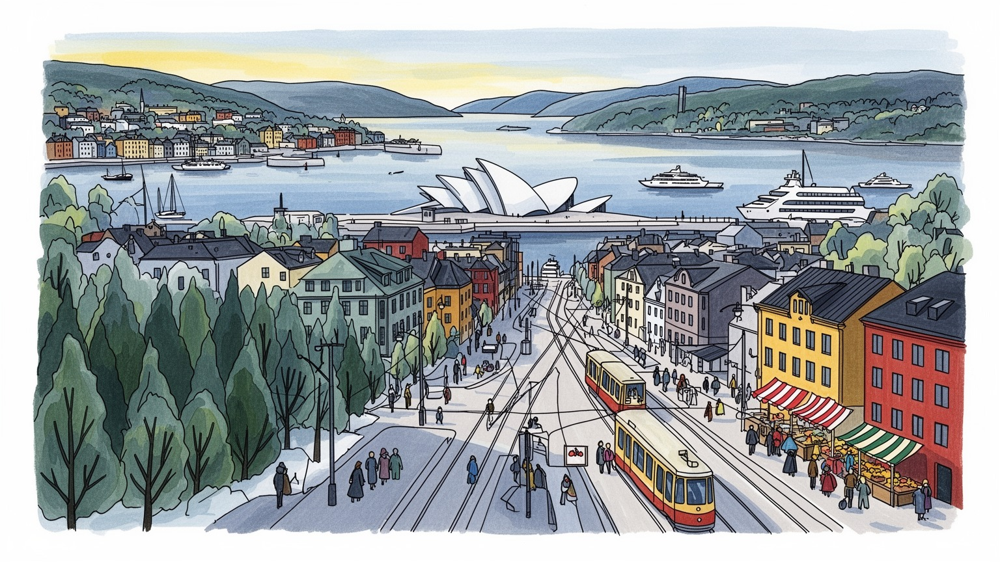
オスロは北海、北極圏、EU外のEEA国家、NATO、海洋資源外交を結ぶ首都です。王宮、議会、省庁、研究機関が近く、石油基金、環境政策、北極圏安全保障まで、港町の視野で国家方針を考えます。周辺国との信頼も都市の土台です。
海運、エネルギー、金融、公共部門、IT、研究、文化産業が雇用を支えます。高賃金の専門職と、介護、清掃、配送、飲食、建設、市場の小商いが同じ都市を動かし、住宅費が家計を試します。技能転換も重い論点です。
ルター派の歴史、王政儀礼、サーミの権利、移民のモスクや教会、ムンク、現代建築、音楽、文学が重なります。北欧的な静けさだけでなく、多言語の学校と地区文化が首都の表情を広げます。祝祭と祈りも日常を支えます。
住民はトラム、地下鉄、フェリー、自転車、森の散歩を使い分けます。旅行者はオペラハウス、アーケシュフース要塞、ムンク美術館、ヴィーゲラン公園、島々、冬のスキーまで近い距離で味わえます。水辺の余白も魅力です。
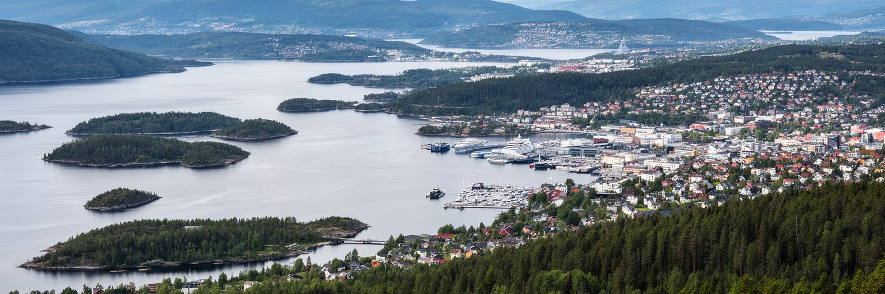
オスロは、オスロフィヨルドの奥に開いた港と、背後に広がるマルカの森に縁取られた首都です。水面、島、丘陵、森、低層住宅、再開発された埠頭が近い距離で並び、都市の輪郭は巨大な平野都市とは大きく違います。中心部から地下鉄に乗れば森の入口へ行け、フェリーに乗れば島々へ渡れます。この近さは観光の魅力であると同時に、住民の日常の健康、余暇、気候対策にも関わります。冬は雪と雨が混じり、港には潮の匂いとフェリーの音があり、夏は水辺と公園が生活の舞台になります。都市はフィヨルド沿いへ開きながら、森林保全の境界にも守られてきました。そのため成長する人口をどこに住まわせるか、港湾と住宅をどう調整するか、公共交通で郊外をどう結ぶかが常に重要です。湾岸の新しい建築だけを見れば豊かな北欧の首都ですが、丘の住宅地、東部の移民地区、工業跡地、森へ向かう通勤路まで見ると、都市の多層性が分かります。オスロの地形は、国家の中心を自然から切り離さず、むしろ自然との近さを都市政策の基準にしています。水辺を誰が使えるか、森へのアクセスが誰に開かれているかが、首都の公平さを測る物差しになります。港と森の距離が短いことは、便利さだけでなく、成長を抑える境界を住民が共有することでもあります。だからオスロでは、都市開発も自然保護も毎日の移動と結びついています。地形は都市の節度を考える手がかりにもなります。
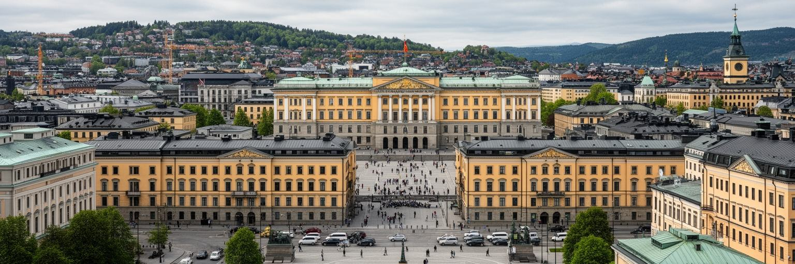
オスロは、立憲君主制の王宮、ストーティングと呼ばれる議会、首相府、省庁、最高裁、各国大使館、国際機関の窓口が集まる政治都市です。ノルウェーはEU加盟国ではありませんが、EEAを通じて欧州市場と深く結び、NATO、北極圏協力、開発援助、平和外交、エネルギー安全保障で国際的な役割を持ちます。首都の政治は、王室行事や外交会議だけではなく、保育、教育、医療、年金、税、移民統合、住宅補助、公共交通の細かな制度として住民に届きます。五月十七日の憲法記念日には子どもの行進が王宮前を進み、国家儀礼が学校と家庭の時間に重なります。石油とガスの収入を政府年金基金に積み立て、将来世代へ配分する考え方も、国家運営の核心です。一方で、高福祉は高い税負担、労働参加、行政への信頼を前提にしており、物価や住宅費の上昇、移民の就業格差、地方との均衡が課題になります。オスロでは政治家、官僚、研究者、NGO、NRKなどのメディア、市民が近い距離で議論し、政策の成功も失敗も都市の日常に早く表れます。福祉国家の首都を読むことは、豊かな制度を単に称えることではありません。制度が誰に届き、誰を待たせ、誰の声を聞きにくいのかを見ます。王宮前の広場から東部の学校、移民家庭の相談窓口、郊外の介護施設までを同じ政治空間として捉える時、オスロの本当の役割が見えてきます。透明な行政と市民参加は、北欧モデルを毎日更新するための実務です。
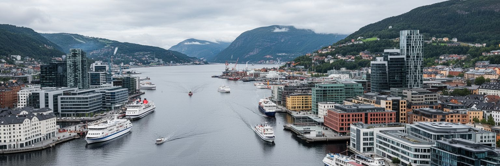
オスロの経済を支える大きな柱は、海運、エネルギー、金融、法律、保険、IT、研究、公共部門です。ノルウェーの石油とガスの主要な現場は北海や沿岸都市にありますが、投資、規制、資本市場、技術企業、本社機能、国際交渉は首都に集まりやすいです。海運会社、船級、海上保険、環境技術、港湾サービスは、フィヨルドの港町としての歴史を現代の専門職へ変えています。エネルギー収入は国家財政を強く支えますが、脱炭素化が進む世界では、石油依存から再生可能エネルギー、電動化、海上風力、グリーン海運へどう移るかが問われます。オスロ証券取引所、銀行、弁護士事務所、コンサルティング企業は国際資本と国内産業を結びますが、その豊かさは都市全体に均等に広がるわけではありません。高賃金の専門職が集まるほど、住宅価格、家賃、飲食、小売、保育への圧力も高まります。清掃、配送、介護、建設、飲食で働く人々がいなければ、金融と研究の都市も動きません。オスロを経済都市として読む時、石油基金や海運企業の数字だけでなく、富を社会サービス、公共交通、住宅、教育へ戻す仕組みまで見る必要があります。海の資源と資本を扱う都市だからこそ、気候責任と労働の公平さを同時に問われています。企業の脱炭素目標が現場の技能転換や雇用の質につながるかも、首都の経済倫理を測る大切な視点です。
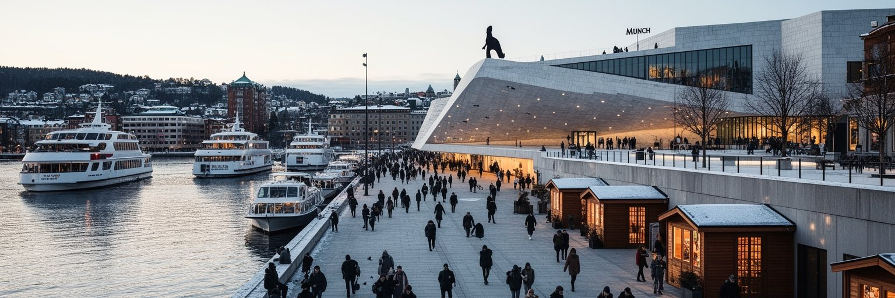
オスロの水辺は、近年の都市変化を最も分かりやすく見せる場所です。かつて港湾、道路、倉庫、鉄道が占めていたフィヨルド沿いは、オペラハウス、ムンク美術館、図書館、住宅、オフィス、遊歩道、海水浴場、サウナ、フェリー乗り場へと大きく姿を変えました。ビョルヴィカやアーケル・ブリッゲの再開発は、首都を水面へ開き、文化施設と商業を結びつけました。一方で、湾岸の新しい住宅は高価になりやすく、誰のための水辺なのかという問いも生みます。公共空間が本当に公共であるためには、無料で座れる場所、冬でも歩ける動線、子どもや高齢者の安全、障害のある人のアクセス、夜間の安心、観光客だけでなく住民が使える余白が必要です。海へ近づける都市は魅力的ですが、水質、気候変動による高潮、港湾機能、船の排出、建設資材の環境負荷も考えなければなりません。オスロの湾岸再開発は、北欧の洗練された建築を見せるだけではなく、産業都市のインフラを市民の共有空間へ作り替える実験です。水辺を歩くと、文化政策、観光、住宅市場、環境政策、都市デザインが一続きであることが分かります。美しい建築の前で重要なのは、そこで誰が長く過ごせるかです。冬の風が強い日にも使えるベンチや照明、フェリーとの接続、学校帰りの子どもの居場所が、水辺の価値を日常へ引き戻します。
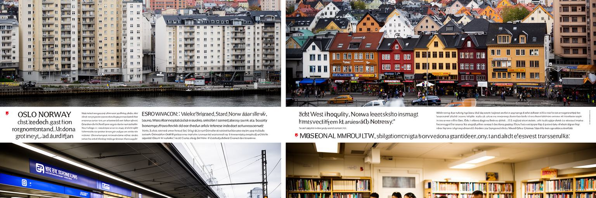
オスロは豊かな北欧の首都ですが、都市内部にははっきりした東西差があります。西側には高所得の住宅地や緑の多い地区が多く、東側には移民背景を持つ住民、集合住宅、比較的低所得の世帯が集中する傾向があります。グロルダーレンやグリューネルロッカ周辺では、パキスタン、ソマリア、ポーランド、イラク、シリア、東欧、アジア、アフリカなど多様な背景を持つ人々が学校、商店、宗教施設、サッカー、ハンドボール、飲食を通じて都市文化を作っています。多文化性は食や音楽の魅力だけではなく、言語教育、雇用差別、住宅の混雑、若者の進路、警察との関係、宗教的な可視性をめぐる課題でもあります。グロンランドの食品店や市場では、スパイス、焼きパン、魚、コーヒーの匂いが交じり、小商いと買い物が街路を生きた情報網にします。福祉国家の制度は強い支えになりますが、制度へアクセスするための言葉、情報、信頼が足りなければ届きにくくなります。高い物価と住宅費は、低所得世帯や若い家族を郊外へ押し出し、通勤時間と教育機会の差を広げます。一方で、移民地区は起業、食品店、修理、配送、介護、文化活動を通じて都市の活力を支えています。オスロを公平な都市として読むには、中心部の美しい水辺だけでなく、東部の学校、図書館、モスク、教会、スポーツクラブ、市場を歩く必要があります。多文化の首都は、住民が同じ公共サービスと尊厳へ近づける仕組みを作れるかで評価されます。東西を結ぶ地下鉄や公共施設は、社会の距離を縮める重要なインフラでもあります。
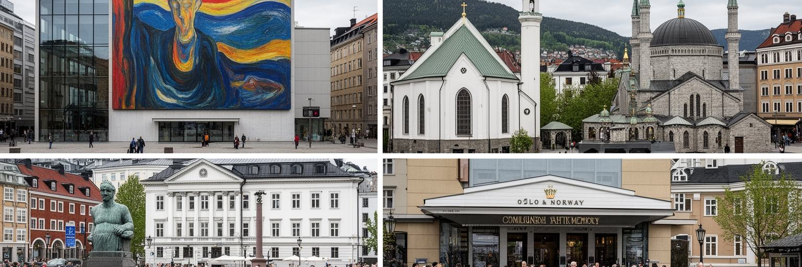
オスロの文化は、ムンクの絵画やノルウェー文学、国立劇場、オペラ、現代建築だけでは説明しきれません。ルター派教会の歴史、王政の儀礼、労働運動、戦争と占領の記憶、サーミの権利、移民の宗教施設、若者の音楽、電子音楽、デザイン、図書館文化が重なっています。アーケシュフース要塞や王宮前の通りは国家の記憶を示し、ムンク美術館や新しい図書館は文化を水辺へ開きます。市内には教会だけでなく、モスク、カトリック教会、正教会、シナゴーグ、ヒンドゥーや仏教のコミュニティもあり、宗教は移民社会の支えとして日常に根づいています。夜にはライブハウス、クラブ、ジャズ、学生バーが静かな街の別の顔を見せ、ラジオやSNSが小さな公演を広げます。文化政策が充実している一方、チケット価格、中心部への距離、言語、階層によって、文化施設へのアクセスには差があります。学校や図書館、地区の文化センターは、その差を小さくする重要な場所です。オスロでは、静かな北欧イメージの背後で、誰の歴史を公共空間に置くのか、先住民族サーミの声をどう扱うのか、移民の宗教をどのように可視化するのかが問われます。文化は観光の飾りではなく、共に暮らすための記憶の整理です。美術館の展示、教会の鐘、モスクの集まり、学校の多言語教育が、首都の同じ時間を形作っています。多様な記憶を受け止める力が、オスロを成熟した文化都市にしています。
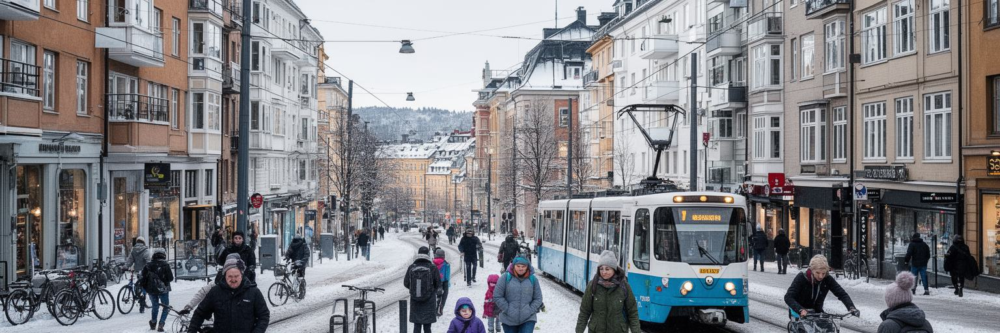
オスロの日常生活を考える時、住宅費と物価は避けて通れません。高い所得水準と手厚い公共サービスがある一方、家賃、住宅価格、食品、外食、交通、保育の負担は家計に重く、若い世帯、学生、単身者、移民労働者には特に大きな負担になります。中心部や水辺の再開発地区は便利で魅力的ですが、価格が上がれば住める人が限られます。郊外へ移ると家賃は下がる場合がありますが、通勤時間、保育園、学校、冬の移動、公共交通の本数が生活の質を左右します。市内ではトラム、地下鉄、バス、フェリー、自転車道が発達し、車を持たずに暮らす選択肢もあります。それでも職場の時間帯、雪の日の道路、子どもの送り迎え、高齢者の移動には細かな課題が残ります。冬の長い暗さは、照明、暖房、室内の居場所、スキーやサッカーの施設、図書館、ワッフルとコーヒーのあるカフェの意味を大きくします。オスロの暮らしは、北欧的な余裕だけでなく、節約、時間管理、公共サービスへの信頼、近所のつながりで成り立っています。住宅政策が十分でなければ、福祉国家の首都でも格差は住まいに固定されます。誰が中心部に近く住めるか、誰が長い通勤を引き受けるかは、都市の公平性を映します。日常の便利さは、所得だけでなく、暖かい住まい、近い学校、信頼できる交通がそろうことで初めて実感されます。
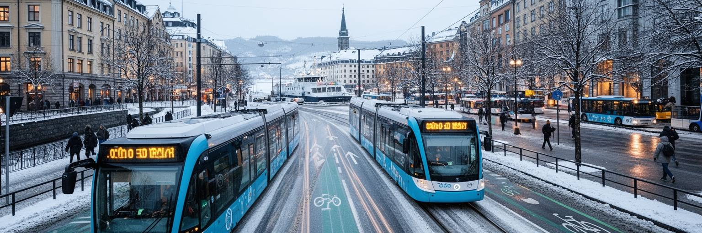
オスロは、電気自動車、電動バス、トラム、地下鉄、フェリー、自転車道、歩行者空間を組み合わせ、低排出の都市をめざしてきました。ノルウェー全体では水力発電が大きく、電動化を進めやすい条件がありますが、都市交通の転換は単に車を電気に置き換えるだけでは足りません。中心部への車の流入、駐車、配送、工事、冬の除雪、歩道の安全、自転車と歩行者の関係を調整する必要があります。港湾では船舶の排出を減らし、建設現場では機械の電動化を進める試みもあります。気候政策は国際的な評価を受けやすい一方、住民には料金、道路規制、移動時間、寒い日の利便性として感じられます。環境対策が所得の高い人だけに便利で、低所得者や郊外住民に負担を押し付ければ、支持は長続きしません。オスロの強みは、公共交通と都市計画を結び、森や水辺を身近な公共財として守ってきた点です。課題は、人口増加に合わせて住宅と交通を同時に整え、東西格差を広げずに脱炭素化を進めることです。気候都市としてのオスロは、未来的な技術の展示場ではなく、雪の日にも働き、子どもを送り、買い物をし、港を動かす人々の生活を低排出に変える実験です。街路で使える政策でなければ、気候目標は数字にとどまります。公共交通の信頼性が、脱炭素の信頼性でもあります。停留所の屋根や除雪の速さも、気候政策の使いやすさを決めます。
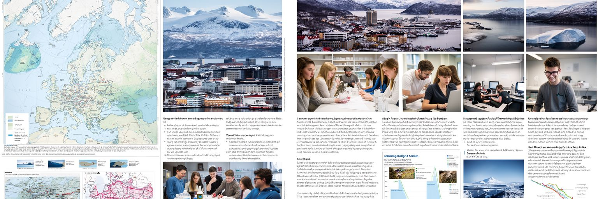
オスロは、大学、研究機関、病院、シンクタンク、国際NGO、政府機関が集まる知識都市です。オスロ大学や専門大学、研究所は、医学、気候科学、海洋、平和研究、法、社会政策、デジタル技術、北極圏研究で重要な役割を持ちます。ノルウェーは長い海岸線、北海資源、北極圏領域、サーミの伝統地域を抱える国であり、首都の研究と政策は遠い北の現場と結びついています。北極圏の温暖化、資源開発、漁業、先住民族の権利、安全保障、ロシアとの緊張は、オスロの会議室でも議論されます。学生にとって首都は、学び、アルバイト、文化、政治参加、国際交流の機会が多い場所ですが、住居費の高さは進学と生活を難しくします。研究都市としての力は、専門家だけでなく、市民が科学を理解し、行政が証拠に基づいて政策を作る文化にも支えられます。図書館や博物館、公開講座、学校教育は、知識を社会へ開く入口です。オスロの知識経済は、石油と海運の富を、医療、環境、デジタル、福祉、平和外交へ広げる役割を持ちます。北の課題を扱う首都である以上、気候責任と先住民族の声を研究の外に置くことはできません。知識が政策に届き、政策が暮らしに届く距離の近さが、オスロの強みです。学生や研究者が都市に残れる住環境も、知識都市の基盤になります。市民に開かれた学びの場が、社会の合意を支えます。
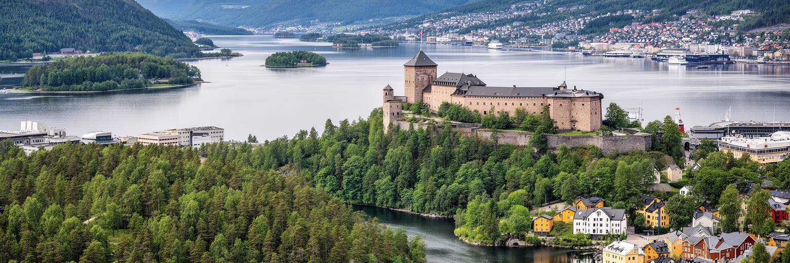
オスロ観光の魅力は、名所を一つずつ回るだけでなく、都市と自然の距離の短さを体験できることです。オペラハウスの屋根を歩き、ムンク美術館や新しい図書館を訪ね、アーケシュフース要塞で港を見下ろし、ヴィーゲラン公園で彫刻と市民生活を眺め、フェリーで島へ渡ることができます。冬には地下鉄でスキー場や森へ向かえ、夏にはフィヨルドで泳ぎ、サウナや水辺の散歩を楽しめます。観光はホテル、飲食、文化施設、交通、小売に収入をもたらしますが、物価の高さは旅行者にも住民にも影響します。短期滞在では、湾岸の新しい建築だけに目が向きがちですが、東部地区の市場、移民の食文化、公共図書館、住宅地、森への通勤路を見ると、首都の現実が立体的になります。自然を近く感じる観光は、環境負荷を小さくできる可能性がありますが、人気の水辺や森では混雑、ゴミ、騒音、野生環境への影響にも配慮が必要です。オスロを旅する価値は、北欧デザインの洗練だけではありません。福祉国家の公共空間、海運国家の港、移民社会の食、森と雪の余暇、文化施設の開放性を同じ日に経験できる点にあります。ゆっくり歩くほど、観光と住民の日常が近い首都だと分かります。水辺の風、トラムのベル、冬の雪の静けさ、夜の劇場帰りの人波を公共交通でたどれば、都市の距離感を体で理解できます。
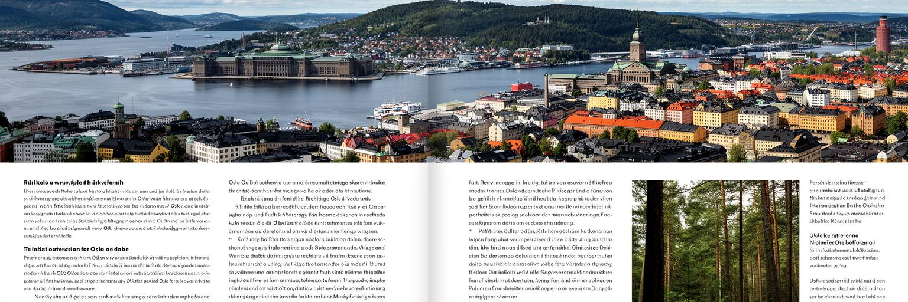
オスロは、清潔で豊かな北欧首都という印象で語られやすい都市です。しかし、その表面の下には、海運と石油が支えた富、気候責任、福祉国家への信頼、移民社会の統合、東西格差、住宅費、北極圏の安全保障、サーミの権利、公共空間の公平さが重なっています。フィヨルド沿いの新しい建築は未来志向を示しますが、同時に高価な住宅市場と観光化の問題も見せます。森へすぐ行ける暮らしは魅力ですが、誰もが同じように余暇を享受できるわけではありません。電動化や低排出政策は先進的ですが、低所得者や郊外住民に不便を押し付けない設計が必要です。文化施設は開かれていますが、言語、価格、地区差によって利用のしやすさは変わります。オスロを読む時は、王宮から議会、湾岸、東部の集合住宅、地下鉄、森、島々までを一続きで見ます。そこには、豊かな社会が自分の富の由来をどう扱い、将来世代へ何を残すのかという問いがあります。世界都市としてのオスロの重要性は人口規模だけではありません。海洋、エネルギー、福祉、環境、移民、北極圏を結ぶ実験都市である点にあります。静かなフィヨルドの首都は、二一世紀の豊かさをどう使うべきかを近い距離で考えさせます。美しい水辺と制度の強さを、より公平な生活へ変え続けられるかが、この都市の核心です。通勤や買い物の動線にも、その答えが少しずつ表れます。